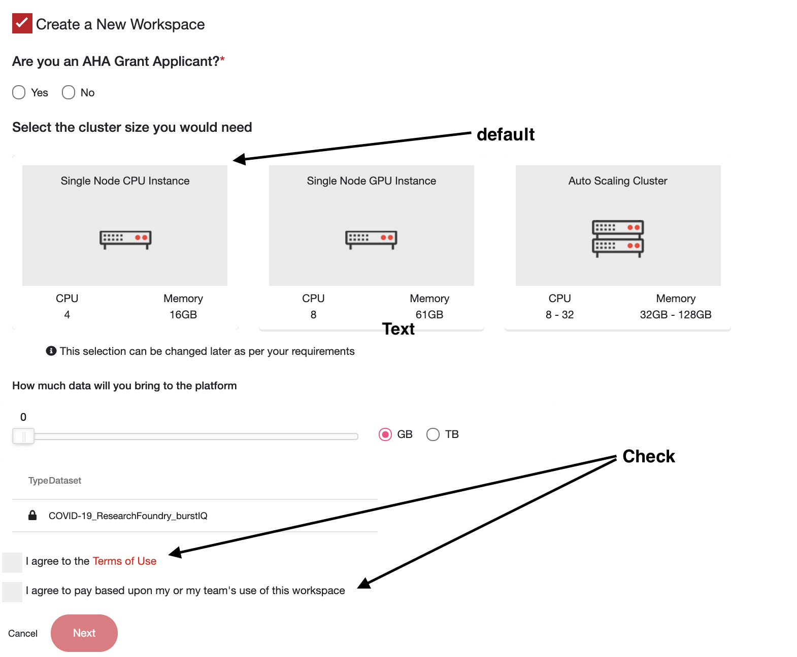
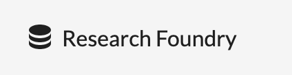
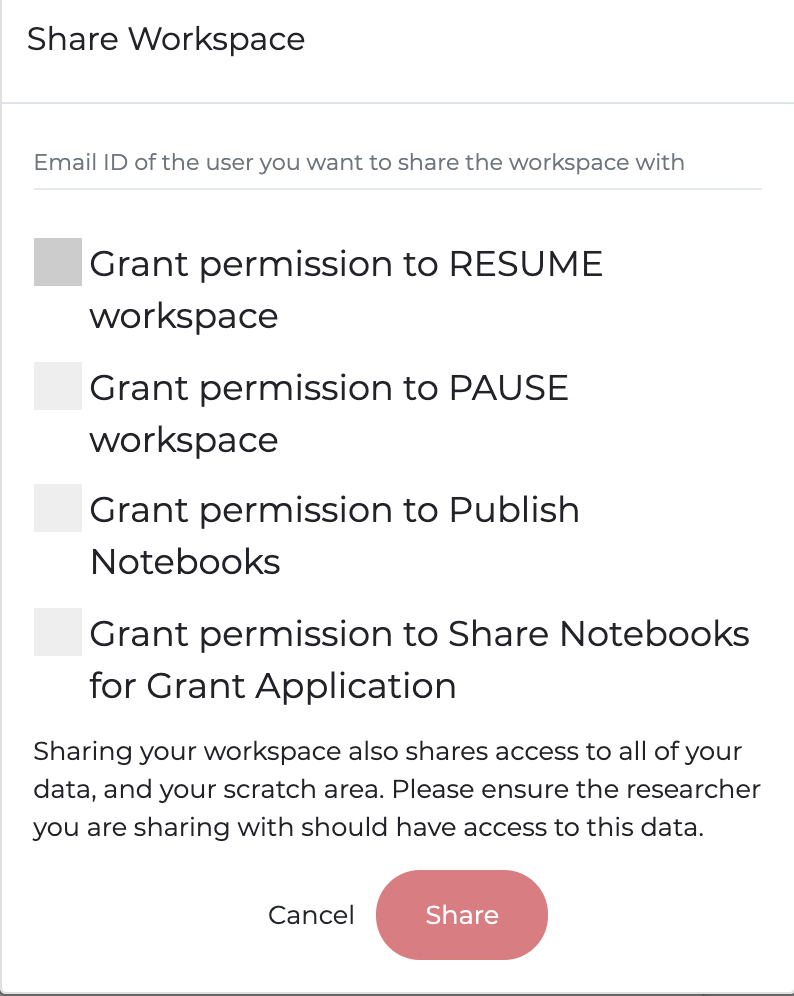
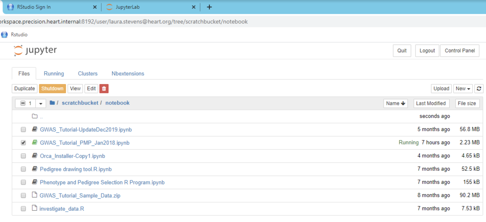

How is the risk of COVID-19 impacted by other health conditions, health disparities, and/or social
determinants of health?
The objective of the AHA COVID-19 Data Challenge is to examine the relationships between COVID-19,
other health conditions, health disparities and/or social determinants of health.
Each participant of the challenge will be provided a free, HIPPA compliant and FedRAMP certified, secure
Precision Medicine Platform (PMP)
workspace
to conduct analyses. Participants may bring their own de-identified data
and/or use the existing datasets we have made available on the
Precision Medicine Platform.
Stage 1:
Starts: May 12, 2020
Ends: July 12, 2020
Stage 2:
Starts: September 1, 2020
Ends: November 1, 2020
The AHA Institute for Precision Cardiovascular Medicine seeks to better
understand the relationships between COVID-19, other health conditions, health disparities, and social
determinants of health. Health disparities include poverty, environmental threats, inadequate access to
health care, individual and behavioral factors and educational inequalities. Social determinants of
health include resources such as food supply, housing, economic and social relationships, education, and
health care.
The AHA COVID-19 Data Challenge includes two stages. Stage 1 will take place from May 12 - July 12,
2020. The top six applicants based on peer review will each receive $5,000.
These six applicants will advance to the second stage of the AHA COVID-19 Data Challenge that will
take place from September 1 - November 1, 2020. The top applicant based on peer review of the second
stage of the AHA COVID-19 Data Challenge will
receive $15,000.
Evaluation
Challenges will be reviewed by a peer review committee that will evaluate:
The novel information learned from the analysis and findings that addresses the focus of the
data
challenge- the relationships between COVID-19, health disparities and social determinants of
health
Findings or Results of the Data Analysis
The data and data analysis methods that support the findings and the novel information
learned
Overall impact of the findings and analysis on the relationships between COVID-19, other health
conditions, health disparities and social determinants of health
Submission
Upon registration for the data challenge, each participant/team
will be provided a PMP workspace, free of charge, to complete analyses for the
challenge. Results must be submitted prior to 5 p.m. Central on July 12, 2020 to be considered for the
data challenge. Details on submission requirements and how to submit results are provided in the
submission section. Information about PMP
workspaces is provided in the Getting Started section.
Follow the steps below to get started and participate in the challenge:
Individuals participating in the challenge need to sign up for a PMP account
AND register for the challenge.
Participants who are part of a team wishing to participate in the
challenge should have ONE representative member (e.g. the PI)
register for the challenge and EVERY team member needs to
sign up for a PMP account
Note: The Workspace request portion of the challenge
registration uses the standard workspace request form. As a result, some parts do not apply to
participants. Workspaces are available to COVID-19 Challenge participants free of charge from May 12
- July 12, 2020
To Begin Registration: Register by clicking the Join the COVID-19 Data Challenge
banner link under the Platform's Search Tab
Complete the Form and Click Next- Workspace Details-
If you are an existing PMP user, please select your existing workspace, otherwise select Create a New Workspace
Select NO for AHA Grant Applicant Status
Do not change the default cluster selection unless you are familiar with AWS sizing (this can be changed later)
Charges are waived for challenge participants, so please agree to pay. No billing information will be collected.

Complete the Form and Click Next: Research Details- This is a standard PMP workspace
request form. Please fill out the Research Details section, by doing the following:
Type "Data Challenge" for all sections that require text input
Select *any of types of research
Select *any of types of research and Disease Area(s) of Focus
Select NO for default in research purpose section if unsure
Complete the Form and Click Submit: Review- Challenge participants will not be
charged
A confirmation notification will appear after you click Submit
CHEERS! You are now registered on the PMP and the Data Challenge!
It can take up to 36 hours for a workspace to be provisioned
You will receive an email notification when the workspace is available for use
Participants may bring their own de-identified data sets to the PMP. Information on how to transfer data to
the platform is provided in the Get Data In and Out section under Getting
Started in the PMP.
Public Data Available
As explained in the Getting Started in the PMP section, publicly available
data can be accessed in a variety of ways on the PMP, including downloading data
directly and pulling/cloning data from repositories. Additionally, BurstIQ's Research Foundry has
collected over 100 datasets, 13 of which are COVID-19, and made them accessible on the PMP.
A table of public datasets accessible in the PMP through BurstIQ's Research Foundry is listed here.
Details on how to access datasets using BurstIQ are provided under Getting Started in
the PMP in the Accessing Data section.
The Precision Medicine Platform (PMP) provides a friendly web UI that allows users to access a secure,
cloud-based environment and contains a variety of standard software and packages such as Python and R.
The platform workspace leverages Jupyter and RStudio to allow users to create notebooks to document and
display results. Each participant must submit a notebook from their individual workspace that provides
the following:
Full Name
Institution (if applicable)
Email Address
Phone Number
A 250-word description of the findings and how they can be applied
Description of data analysis and datasets used for establishing, testing, and validating
models
Figures or tables (if applicable)
More information on Jupyter Notebooks can be found here. More
information on R Notebooks can be found here.
Submitting a Notebook
Once you have completed your analysis and created a notebook, meeting the criteria outlined
above, follow the steps below to submit your notebook for review:
The submitted notebook should be in HTML format. In Jupyter, follow these steps:
In the File Menu, selecting Download as > HTML (.html). The HTML file will
download to a temporary downloads folder
Re-upload the HTML file to the workspace by clicking the upload icon in
JupyterLab or clicking the Upload button on the Jupyter Home tab.
In the workspace, save the notebook in the /mnt/workspace/My_Notebooks directory this will sync the
notebook with the
workspace portal.
The notebook will be listed on the workspace portal page. To the
right of the notebook, click
Sharing the notebook creates a static link that will be used by the COVID-19 Data Challenge
peer review team.
Note:Only
the information in the notebook will be visible to the peer review team. Therefore, it is imperative
that you include everything necessary before sharing. If you make changes after sharing, you
will have to re-share.
Additional Information
COVID-19 Data Challenge applicants have complimentary PMP workspace access between May 12 and July
12, 2020
It can take up to 36 hours to provision a workspace
PMP workspaces will be shut down at 5 p.m. Central on the last day of the data challenge,
unless you decide to continue use on the PMP as a paying customer
Data in the workspace will not be saved after the last day of the challenge, unless you decide to
continue to use the PMP as a paying customer
A PMP notebook must be shared prior to 5 p.m. Central on July 12, 2020 to be considered for the
data challenge
Go here
to view the User Documentation for assistance with how to manage the workspace
Note: If you haven't done so already, please register for an account on
the Precision Medicine Platform (PMP)
Overview
The PMP is a secure HIPPA compliant and FedRAMP certified cloud-based ecosystem that facilitates data
sharing, collaboration, and power computing.
The PMP workspace is an interactive AWS cloud environment comprised of common tools and
software used in biomedical analyses that enables users to easily store data, collaborate, and
perform analyses while also having access to elastic power compute resources on demand.
Learn more about the Precision Medicine Platform here
Explore the capabilities of Precision Medicine Platform workspaces here
Collaboration
The platform facilitates collaboration and reproducibility by enabling users to share workspaces
and conduct analyses in a private, secure cloud environment.
Users can also collaborate through traditional development methods such as github.
Collaboration is made easy with the PMP because all data and analyses reside in a secure
workspace for which only the participant/team representative has access,
unless the participant/team representative chooses to collaborate with colleagues and share the workspace on the PMP workspace portal.
Note: It is the participant's
responsibility to ensure collaborators have the appropriate data access approvals when
sharing.
Power Compute In the PMP
There are multiple ways to take advantage of power compute in the Precision Medicine Platform,
namely:
EMR, Automatic Scaling through Spark
Analyses that use spark based packages or software can leverage the EMR workspace
auto-scaling cluster architecture to optimize performance
Elastic, High Performance Computing
Analyses that need to optimize software through traditional parallel computing
methods can leverage the EC2, GPU and CPU architecture options
Default workspace architectures are designed to fit the needs of most users, however architecture
sizes can be increased and customized as needed.
To increase compute resources in a workspace or get assistance with power computing on the PMP,
please contact us
Please contact us if
at any point you are having trouble uploading data.
File Upload
Files can be uploaded to the platform on the workspace portal page by
clicking the upload icon.
Once the files are uploaded and you have launched your workspace, the files will be found in the
folder labeled scratchbucket on the Jupyter home page (path: /mnt/workspace/scratchbucket/).
Note: The time it takes to upload data is dependent on the internet upload
speed
SFTP Transfer
Should you have very large data files and need an SFTP set up to upload the data, please submit a
request through Technical
Support.
Data and Code within a workspace can be synced with the workspace portal by moving it
to the /mnt/workspace/My_Notebooks directory within the workspace. Files located in this directory
will display under the My Notebooks and Data section of workspace portal.
Note: Due to the secure nature of the workspace, certain files will not
sync with the workspace portal. To extract this data, please file a ticket with Technical Support.
Please contact us if
at any point you are having trouble accessing data.
As mentioned, public data can be accessed in a variety of ways in a PMP workspace including
downloading data directly and pulling/cloning data from repositories. Steps for accessing data from
download links, repositories, and BurstIQ are described below.
Data can be downloaded in the workspace in the same fashion as your personal computer. Add a
new tab in Chrome, navigate to the download link, and click download.
This will download the data in a temporary downloads folder. Simply click Upload
in Jupyter or Jupyter Lab to upload the downloaded files and save them to the workspace.
Note: If you are having trouble accessing a certain link in
the platform, please file a ticket
with Technical Support.
Using git repositories in the workspace functions the same way as it does on a personal computer.
To pull data or clone a repository, simply go to the repository in the workspace (first tab on
right shown below).
A terminal can be opened in the workspace through JupyterLab or by clicking New >
Terminal in the Jupyter Home Tab
Setting up an ssh key or using login credentials works as the same as with your personal
computer.
The example above is cloning the COVID-19 Csse_daily_reports repository from Johns
Hopkins.
Tip: Make sure to access the repository in your workspace when
setting up ssh keys. You cannot copy an ssh key out of the workspace
Research Foundry, hosted by BurstIQ, is a coalition of health-focused researchers,
organizations, and innovators from all over the world. BurstIQ currently hosts over 100
datasets (of which 13 are COVID-19) through block chain connections.
As part of the COVID-19 Data Challenge, you can request access to Research Foundry and
choose any number of datasets. Information on how to register with Research Foundry and access a
list of publicly available data is detailed below:
To be able to access Research Foundry datasets, one must first register for a Research Foundry
account. Fill the form out and an email will be sent to you confirming your account.
Research Foundry leverages Burst Chain to govern and provide data access. This is done
by issuing users a private/public key pair that acts as a user's credentials when accessing
data. Once you have created an account, login and configure your keys.
Make sure to save your PrivateID!! You will not be able to recover it if it is not
saved, and you will need to get a new key
After registering for an account, you will have access to the developer documentation
and can begin learning how to pull data with BurstIQ
Once you have created an account, click the menu icon on
the top right
Select Research Foundry to view available datasets 
Select API documentation, then click on Docs to view Documentation, Videos, and
Tutorials
To access data through BurstIQ, one needs to use the burst API to provide their
private ID, dataset ID, and a TQL query.
Examples of how to do this are detailed on the API documentation page under
Tutorials, Videos, and Research Foundry Datasets sections.
Additionally, a Jupyter Notebook providing examples is provided in the PMP workspace
under /mnt/workspace/Research_Foundry_examples
The design of PMP workspaces is such that when a user is provisioned a workspace, no one except the user
has access (including the AHA). All code and data is housed behind a secure walled garden that cannot be
accessed by anyone other than the user. To facilitate collaboration and provide workspace access for
teams working on projects, the owner of a workspace can share their workspace with other people who have
a PMP account. Shared users can access all code and files in the workspace and it is a workspace owners
responsibility to ensure the new shared user has the appropriate data approvals prior to sharing the
workspace. To share a workspace with a user, click the menu icon on the
workspace portal. Enter the
email for the shared user on the PMP and set any desired restraints (e.g. allowing to share/publish
code or allowing to start/stop the workspace)

The AHA recommends pausing your workspace when it will not be in use for a few days or longer. This
preserves the overall resources needed to run and maintain a workspace and allows for updates to be
completed. A workspace can be paused by clicking the red pause button on the workspace portal.
Additionally, users can change architectures and compute options when pausing and resuming.
When resuming, the user will be provided the opportunity to reconfigure the workspace - EMR, EC2-GPU, or
EC2-CPU. For custom sizing options, please reach out to Technical Support.
A Few Helpful Tips:
The username and password to RStudio is rstudio and workspace respecitvely
The directory where files are located is /mnt/workspace
The terminal can be accessed in JupyterLab or by clicking the New button in Jupyter
The internet is available in the workspace, just click a new tab in Chrome
To paste something inside the workspace, click the paste icon on the top menu bar. You can not copy
out of the workspace due to security reasons.
If screen is frozen or solid blue/black, click the 4 squares on the top menu bar
Pre-Installed Software
PMP workspaces come with R, Python, Scala, and Spark pre-installed, as well as variety of other standard
packages and software used in clinical and biomedical analyses. These include machine learning and
statistical modeling packages such as Keras, TensorFlow, PyTorch, and Caret.
Common genetic packages available through Bioconductor as well as other common command-line tools. A
full list of packages and software available on the platform can be found here.
The workspace leverages Jupyter, JupyterLab and RStudio to provide a UI-based environment for users
to conduct analyses. The ReadMe notebook on the Jupyter Home page (/mnt/workspace) provides information
regarding workspace usage, including trouble shooting instructions, software references, and tutorials.
Customizing the Workspace and Installing Software
The workspace is also fully customizable. Licensed software, such as SAS and MATLAB, can be installed
for users with a license. Python and R based packages can easily be installed by users via pip and
install.packages respectively.
The workspace has a Red Hat Linux Operating System. Yum can be used to get, install, and manage
software packages. Users are granted root access to enable customization of workspaces based on user
needs.

A variety of tutorials and examples are available on the Platform. Available tutorials cover concepts
such as how to perform machine learning analyses with spark, how to conduct a GWAS analysis, or how to
install and use software.
The ReadMe notebook on the Jupyter Home Page (/mnt/workspace) of a workspace contains an overview
of the content available and the location for many of the tutorials available. Tutorials and
examples can be found in the jupyter_notebooks directory (/mnt/workspace/jupyter_notebooks) of the
workspace. Users can also request data science and support services for help with analyses and workspace
usage. For more information contact
us.